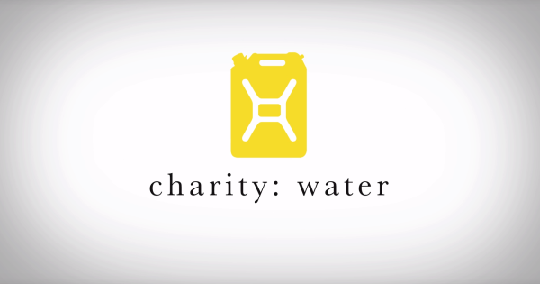

Our impact in action



Presently, 703 million people live without access to basic clean water. This crisis keeps kids out of school and traps entire communities in preventable cycles of disease. College students have the collective power to change this.
That is where charity: water changes the game. With private donors covering operating costs, 100% of your donation goes directly to funding sustainable water projects in the field.
Small changes build a lasting global impact.